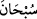
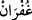

vurgulanmaktadır. Bunlar Allah’a şükrü ve ibâdeti O’na tahsis etmeyi gerektiren yine
O’nun kudretinin eserleri ve nimetlerinin güzellikleridir. Yine “
” kelimesinde
durum böyle olduğu halde kâfirlerin ibâdeti Allah’a tahsisi ihlâl etmelerine hayret etme
mânâsı vardır. Çünkü tenzih hayretle çelişmez.
Mânâ şöyledir: “Bütün bu sınıfları ve çeşitleri var edip yaratan Allah’ı tesbih ederim.
Yani inanç ve amel bakımından Allah Teâlâ’nın şânına yakışmayan şeylerden O’nu
tenzih ederim. Bu tenzih Allah’a has ve O’nun şânına layıktır. İşte burada Allah
Teâlâ’nın şânına yakışmayan şeylerden kâfirlerin yapmış oldukları şirk koşmak ve şükrü
terk etmek gibi durumlardan Allah Teâlâ’nın münezzeh ve uzak olduğu yine Allah
tarafından verilen bir hükümle bildirilmiştir. Mü’minlere de böyle söylemeleri ve onun
ihtivâ ettiği mânâya inanmaları, onu ihlal etmemeleri ve ondan gafil olmamaları telkin
edilmiştir.
Bazıları der ki: “
” kelimesi “
(mağfiret dilemek)” kelimesi gibi masdardır.
Onunla tam tenezzüh ve bütün olarak her kötülükten uzaklaşma murâd edilmiştir. Buna
göre bu cümlenin mânâsı Allah Teâlâ’nın bizzat kendisinin her türlü noksanlıklardan
münezzeh olduğunu haber vermesidir. Yâni Allah Teâlâ zâtı ile kendisine lâyık olmayan
şeylerden özel bir tenezzüh ile münezzehtir/uzaktır. Bu sınıfları ve türleri yaratan
Allah’a hiç bir şey yaratamayan, bilakis kendileri yaratılmış ve âciz olan putları ortak
koşmak nasıl câiz olur?
Şeyhzâde der ki: “Bu tenzih kalb ile tenzîhi de içine alır ki kesin inanç demektir.
Onunla beraber lisan ile tenzîhi de içine alır ki zikr-i hasen/güzel zikir demektir.
İkisiyle beraber organlarla tenzîhi de içine alır ki amel-i sâlih demektir. Birincisi
asıldır. İkincisi birincisinin, üçüncüsü de ikincisinin semeresidir. Çünkü insan bir şeye
inanınca bu inanç kalbinden diline çıkar. Dilden söyleyince sözündeki doğruluğu
organlarının fiillerinden belli olur. Şu halde dil kalbin, organlar da dilin tercümanıdır.”
Âyette yaratılan her şeyin mutlaka çift yaratıldığına işâret vardır. Ferdiyyet/teklik,
rubûbiyyet vasıflarının en özel olanlarındandır. Nitekim Abdülazîz Mekkî (r.h.) şöyle
der: “Allah Teâlâ bütün çiftleri yarattı sonra da “O’nun benzeri hiçbir şey yoktur.”
(eş-Şûrâ, 42/11) buyurdu ki her şeyi yaratanın eşten/çift olmaktan münezzeh olduğu, her
şeyde Allah Teâlâ’nın varlığına, birliğine ve kudretinin kemâline delil olduğu
anlaşılsın.
Keşfü’l-esrâr’da der ki: “Her şey Allah’ın varlığına şâhid ve tekliğine nişânedir.
Fakat ne şâhidlik edenin aklı ne de nişâne olanın dili vardır.”
Herşeyde O’na âid bir âyet/nişan vardır
O’nun bir olduğuna delâlet eder
Enîsü’l-vahde ve celîsü’l-halve’de der ki: “Vaktiyle inkâra ve zındıklığa meyilli bir
padişah vardı. Bir de onun akıllı ve müslüman bir veziri vardı. Vezir padişahı bu
durumdan kurtarmak istedi. Vezir her yıl padişah için ziyâfet vermeyi âdet edinmişti.